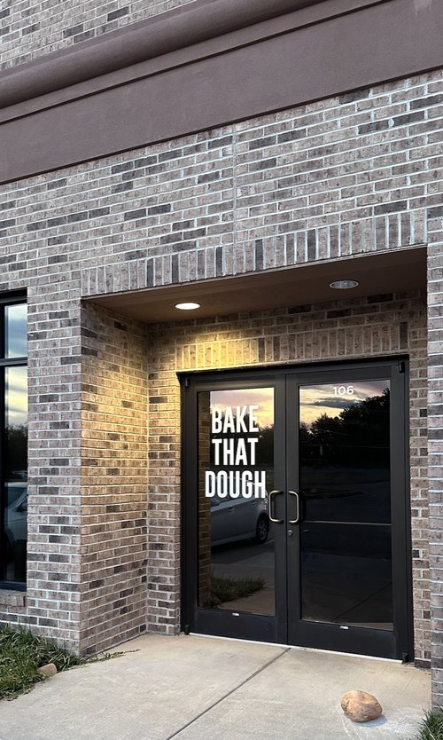
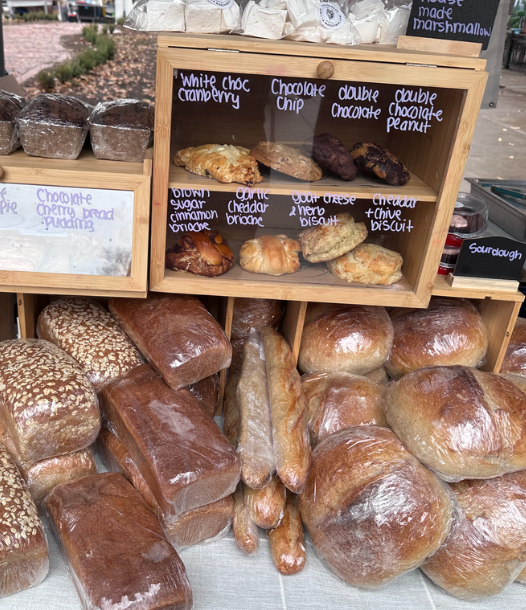

Bake That Dough
Gourmet Made Easy
est. 2020
Bake That Dough was founded with the mission. That mission is simple "Make memories though food."
We pride ourselves on quality, scratch made products baked daily.
Come and see us the next time craving strikes.
|  |
Storefront10700 Virginia Pine Way, Knoxville, Tennessee 37932.
Visit us at our storefront! Store Hours (Winter Hours)
|
Farmers' Markets
Look for us at the Farmers' Market!
We do several markets throughout the week across the Knoxville area.
Add us to your list of stops at your weekly trip to the market.
|
Oak Ridge Market
Indoors at Roane State Community College 701 Briarcliff Avenue, Oak Ridge, TN 37830 January 11th - March 25th Saturday, 9 AM - 12 PM
Maryville Market
Outdoors at Founders Square 330 E Broadway, Maryville, TN 37804 April 12th - November 22nd Saturday, 8:30 AM - 11:30 AM
Ebenezer Methodist Church
Outdoors in the lot. 1001 Ebenezer Road, Knoxville, TN 37923 April 8th - November 24th Tuesday, 2 PM - 5 PM |
 |
Local Partnerships
Grab a loaf of bread or a pastry from our friends at Euphoric Cheese Shop.
Add us to your grocery list at Three Rivers Market.
Have delicious baked goods (and many other vendors) delivered to your door by the wonderful team at Market Wagon.